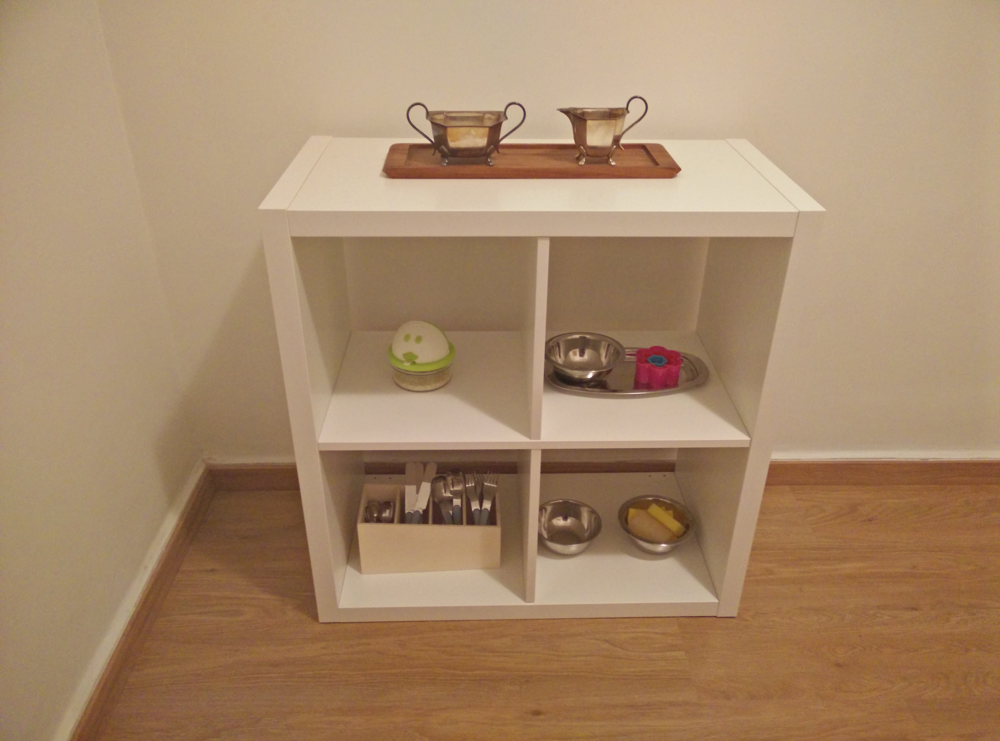
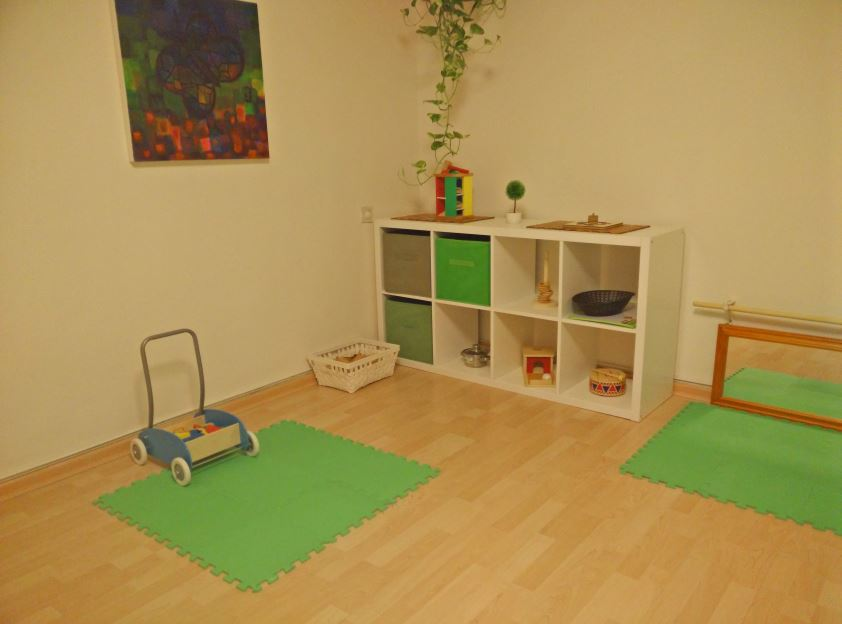
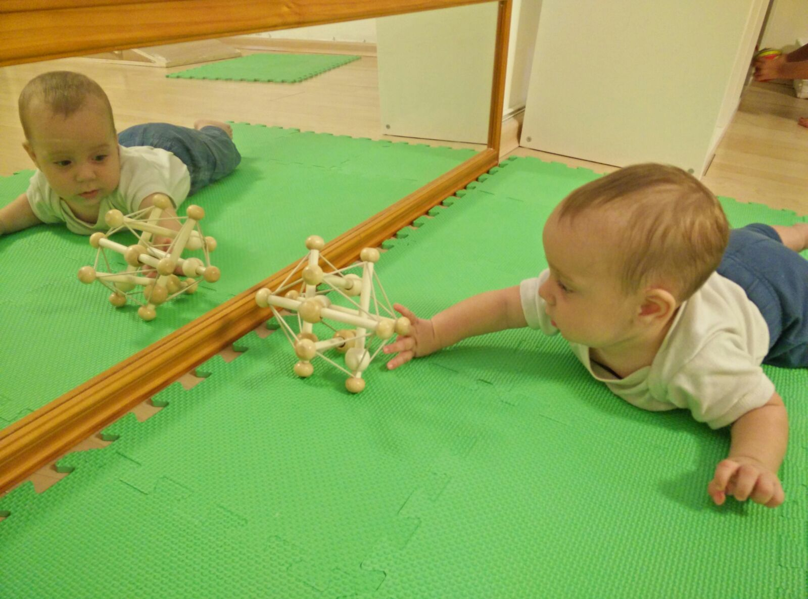

משפחתון גוזלי הוקם מתוך אמונה שהשקעה רגשית וחינוך איכותי מצמיחים אנשים טובים ושלמים יותר.
ברוח תפיסותיהם של מונטסורי ויונג, ילדכם מושם במרכז.
הפעוטות נהנים מיחס אישי מחד ומרחב אישי מאידך ומטופלים ע״י צוות מנוסה ומסור.
במשפחתון מושם דגש על התפתחות קוגניטיבית, מוטורית, חושית ויצירתית, כמו גם על
כלים ומיומנויות לחיים, כאשר ילדכם מוביל אותנו בדרך למימושו העצמי ופיתוח
עצמאותו. הפעוטות מתנסים ונחשפים למגוון של תכנים, אך באופן פרטני-מודרך
ובאופן התואם את צרכיהם האינדיווידואלים, התפתחותם האישית וגילם.
הילדים ייהנו מאביזרי למידה ומשחקים ייעודיים כיאה לשיטה.

אנו מאמינות בהתנהלות המאפשרת לפעוטות חקר ללא עודף גירויים, בסביבה ייעודית
אסתטית, רגועה, חמה ומכילה, המאפשרת צמיחה רגשית, פיסית ואינטלקטואלית
באופן שהינו טבעי והרמוני. לצד ההתפתחות האישית ופיתוח עצמאות ויצירתיות,
הפעוטות נחשפים לקשר העמוק שבין האדם לטבע ומקבלים כלים להתמודדות עם
העולם הסובב אותם, תוך חשיפה להיותם חלק מחברה אנושית רבת גוונים.
בהתאם
לשיטת מונטסורי, הקבוצה הינה רב גילאית "צומחת" (בני חצי שנה עד שלוש). צעירי
הקבוצה לומדים דרך התבוננות בהתנהלותם של בוגרי הקבוצה, ואילו הבוגרים
מפתחים יכולת הדרכה, אחריות ורגישות כלפי אלו הצעירים מהם.

על מנת שתחושו חלק בלתי נפרד מחיי ילדיכם גם בשעות שאינם איתכם, אנו מלווים
אותם מקרוב, מתעדים את התפתחותם לאורך השנה ומביאים לידיעתכם ההורים. את
פעילות המשפחתון, מלווה מטפלת רגשית ואשת חינוך עם ניסיון של למעלה מ- 30 שנה
בעבודה עם ילדים ומבוגרים.
בטיחות ילדיכם חשובה לנו, ועל כן יבוטח המשפחתון ע"י חברה המתמחה בפוליסות מסוג זה. כמו כן, יותקן בגן לחצן מצוקה לעיתות חירום (תלוי במספר הנרשמים).
מריה מונטסורי
(1870-1952) – ילידת איטליה, רופאה ואשת חינוך פורצת דרך. האמינה כי ילדים הם
סקרנים וחקרנים מטבעם, וזקוקים לסביבה ידידותית ומותאמת לצורכיהם, על מנת לממש את
הפוטנציאל הגלום בהם. לגישתה, ילדים הם בעלי הנעה ו"ידיעה" פנימית, שמביאה אותם לגשת למה
שמעניין אותם ועונה על צרכיהם הרגשיים, הגופניים והאינטלקטואלים. על המבוגר להנחות ולהכווין
בלבד, תוך שהוא צופה בילד ומאפשר לו עצמאות, מרחב אישי וחופש בחירה, זאת, על מנת לחזק את
היצירתיות שבו, את האמונה ביכולותיו הוא ואת ההכוונה הפנימית שלו. חינוך מונטסורי מהותו לא רק
הקניית ידע ומיומנויות אלא הנחת יסודות יציבים ועמוקים עליהם יבנו הילדים את עולמם.
קארל גוסטב יונג
(1875-1961) – פסיכיאטר שווייצרי ואבי הפסיכולוגיה האנליטית, נחשב לאחד ממניחי היסודות של הפסיכולוגיה המודרנית ולהוגה בעל השפעה בתחומים רבים ומגוונים (אומנויות, מדעים, דת ופילוסופיה). יונג טען, בין היתר, כי ילד לא מגיע לעולם כ"לוח חלק" אלא כאינדיווידואל עם אישיות , אופי ופוטנציאל שעליו לממש במסע חייו. על המבוגר לכן, לנהוג בילד ברגישות, בהבנה ובכבוד, תוך זיהוי מורכבותו וייחודו, זאת על מנת לסייע לילד לחיות חיים אותנטיים למי שהינו ונועד להיות.
יונג סבר שמשחק הינו אמצעי עיקרי להגשמה עצמית והאמין שזוהי זכות של פעם בחיים - להתממש להיות מי שאנחנו באמת.
המשפחתון ייפעל בימים א-ה בין השעות 08:00-16:00 ובימי ו בין השעות
08:00-12:00
(במתכונת של שלושה ימי שישי בחודש, לוח ימי שישי יפורסם בנפרד).

סדר היום
08:00-09:00 הגעה למשפחתון
09:00-09:30 ארוחת בוקר
מעגל פתיחה ופעילות מונטסורית\חוגים 09:30-11:00
11:00-12:00 פעילות טבע/חצר
12:00-12:30 ארוחת צהריים
12:30-14:00 שנת צהריים
14:00-14:30 ארוחת ביניים
14:30-15:30 פעילות מונטסורית ומעגל סיום
15:30-16:00 איסוף
- שנת בוקר תתאפשר לילדים הזקוקים בכך
חוגים
במשפחתון מתקיימים חוגים לילדים:
Baby Tale -
סיפורים מומחזים באמצעות בובות
Baby Move -
תנועה בליווי מוסיקה וקצב
Baby English -
חשיפה לשפה האנגלית דרך שירי משחק
משפחתון גוזלי הינו הגשמה של חלום משפחתי, המביא לביטוי עשרות שנים של נסיון וידע צבור בתחום החינוך והפסיכולוגיה.
שני נירן
– בעלת 10 שנות ניסיון בארץ ובחו"ל בהוראה, הדרכה וחינוך ילדים
במגוון גילאים, עם התמחות בתנועה ובגננות מונטסורית. בוגרת לימודי מונטסורי מטעם המרכז
למונטסורי צפון אמריקה ולימודי רפואה אלטרנטיבית במכללת ברק, לקראת סיום תואר בפסיכולוגיה
וחינוך. רקדנית לשעבר.
אמא לנויה בת 3 וחצי ולאריאל בן 3 חודשים.
יולי הראל
– בוגרת תואר שני בהצטיינות בפסיכודינמיקה של
ההתפתחות האנושית, עם התמחות בפסיכולוגיה אנליטית יונגיאנית, מטעם ארגון הפסיכותרפיסטים
הבריטי. במהלך לימודיה, התמקצעה בעריכת תצפיות על הקשר הדיאדי (אם- ילד), בדגש על תינוקות
מיום היוולדם, תוך מעקב עומק אחר התפתחותם הפיסית, האינטלקטואלית והרגשית. בעלת ניסיון עשיר
כפסיכולוגית מדריכה לקבוצות ויחידים בארץ ובחו"ל. רקדנית וזמרת קלאסית לשעבר.
אמא ליונתן בן 5 וארייה בת 5 חודשים.
מלי קסטן
– מחנכת ומטפלת ריגשית, בעלת ניסיון של למעלה מ – 30 שנה בעבודה עם אוכלוסיות רגילות ואוכלוסיות מיוחדות, פעוטות, ילדים ומבוגרים. בוגרת תואר ראשון בחינוך מיוחד. בעלת תעודת הוראה באומנויות ולימודי תעודה כמטפלת חינוכית, עם התמחות בטיפול בעזרת בעלי חיים. אם לשלוש וסבתא לשישה.
ארוחת בוקר
פירות העונה / ירקות טריים
ביצים
אבוקדו\חומוס\טחינה
חלב אם שאוב\תחליף חלב\דייסה (מסופק ע"י ההורים)
ארוחת צהריים
מרק
הודו\עוף\בקר\דג
אורז מבושל\תפוח אדמה\פסטה
גזר\דלעת\דלורית\קישוא
חומוס\עדשים\שעועית\קוסקוס
ארוחת ביניים
פירות העונה\כריך עם ממרח
חלב אם שאוב\תחליף חלב\דייסה (מסופק ע"י ההורים)
- הפעוטות יתנסו במרקמים שונים של מזונות (מרוסק – מוצק)
- התפריט המוצע רלוונטי עד גיל שנה ויורחב על פי גיל הפעוט
- הארוחות טריות ומבושלות במקום
- התפריט בנוי על המלצות משרד הבריאות ונתון לשינויים
יעודכן בהמשך...
שני נירן
טל. 053-332-9604
shanikesten@gmail.com
יולי הראל
טל. 053-340-6690
yoliharel@gmail.com
המשפחתון ממוקם בנווה אמירים, הרצליה.